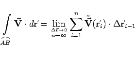

Inhalt Index DeskTop Bronstein

 Vektoranalysis und Feldtheorie Integration in Vektorfeldern Kurvenintegral und Potential im Vektorfeld Kurvenintegral im Vektorfeld
Vektoranalysis und Feldtheorie Integration in Vektorfeldern Kurvenintegral und Potential im Vektorfeld Kurvenintegral im Vektorfeld


 für , also für
für , also für|  | (13.96b) |
bezeichnet. Die Existenz des Kurvenintegrals (13.96a,b) ist gesichert, wenn die Vektorfunktion  und das Bogenstück
und das Bogenstück  stetig sind und wenn letzteres stetige Tangenten besitzt. Eine Vektorfunktion
stetig sind und wenn letzteres stetige Tangenten besitzt. Eine Vektorfunktion  ist stetig, wenn die zu ihrer Beschreibung notwendigen drei skalaren Funktionen, ihre Komponenten, stetig sind.
ist stetig, wenn die zu ihrer Beschreibung notwendigen drei skalaren Funktionen, ihre Komponenten, stetig sind.